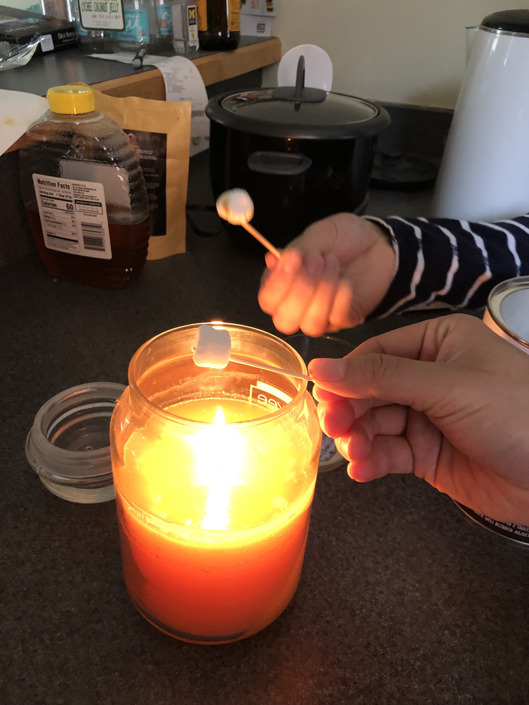
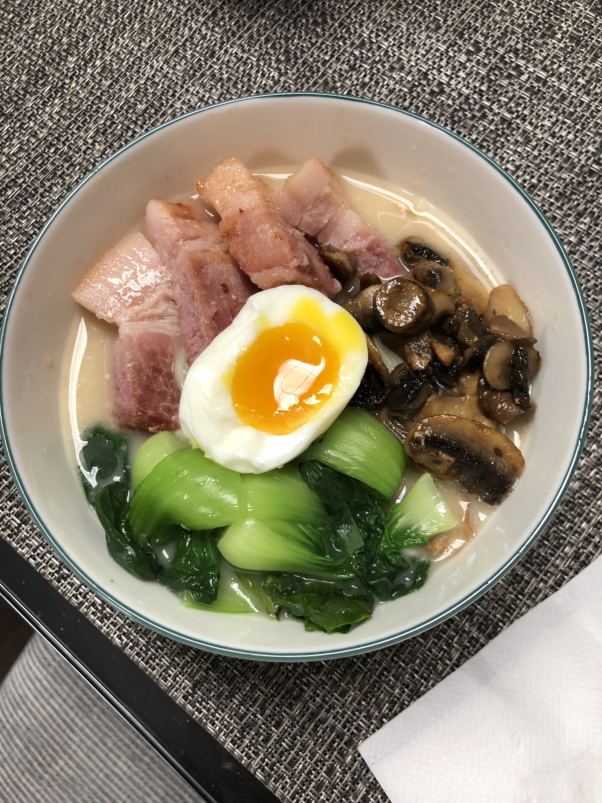
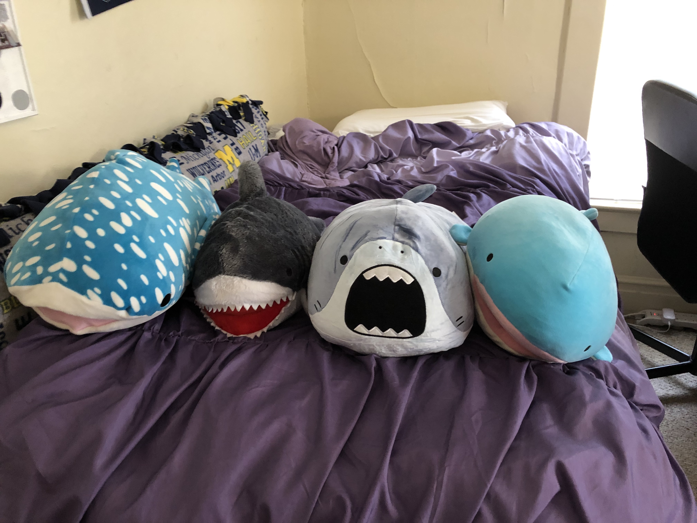
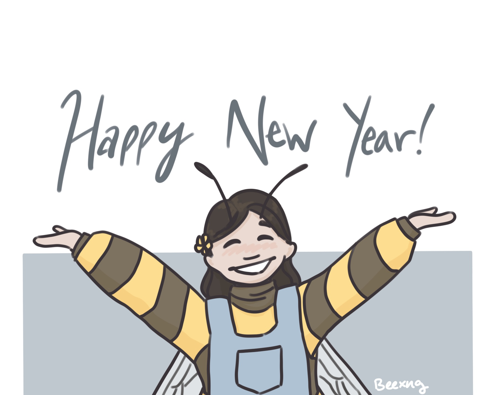

For the 2022 MLK weekend, my friends and I drove to Chicago to spend our break eating good food. Most of us had been to Chicago before, but one of the group hadn't, so we showed him to all the tourist locations.
  The first week of 2022 was a fun one. Aside from the stress of worrying about class waitlists and so forth, I enjoyed the time I got to spend with friends before classes started picking up.
Happy New Year! This was my first drawing of 2022, and I'm excited to see where this year will take me.